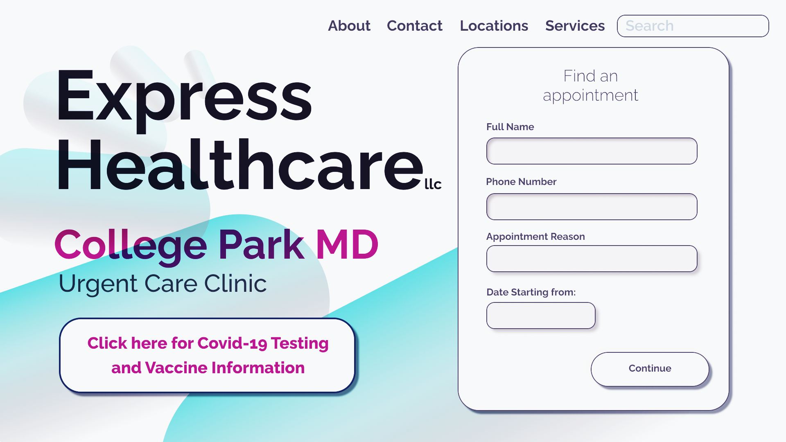
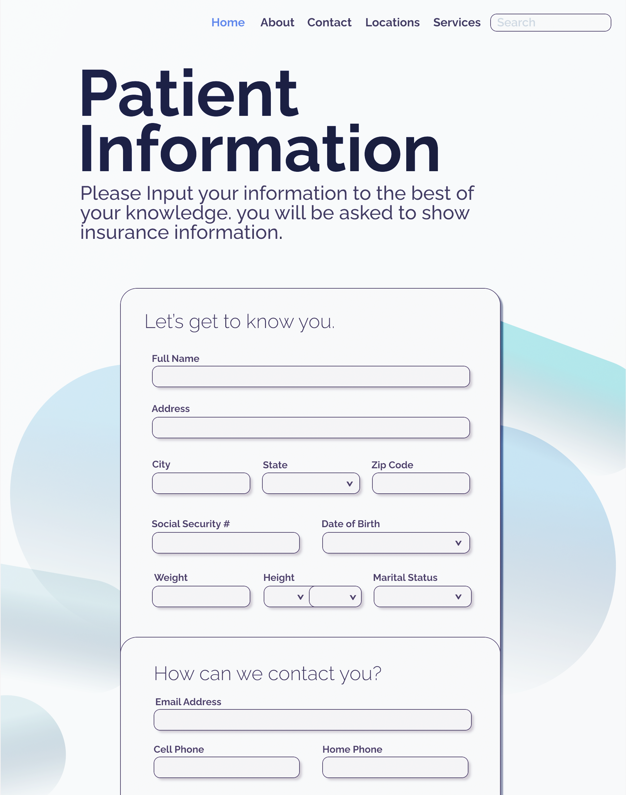
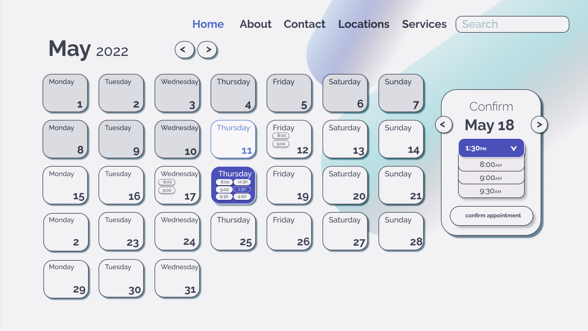
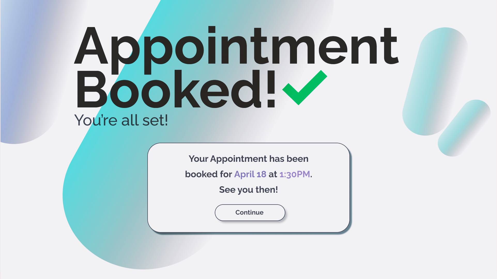

I decided to bring it upon myself to take this as an opportunity, and made an unsolcited redesign of the entire online process.
Projects like this one gave me insight into what can go right with design, but also allowed me to take a deeper look at what's really wrong, why it's wrong, and if there is a UI fix. At the end of the day, the goal is to help the User in the most useful way.
Let's Give some credit where credit is due. Covid-19 has entered every facet of life, and healthcare workers have had to adapt to ever-changing circumstances. Healthcare IT has the ability to help them in some many different ways, but it can also be a hinderance for both patient and provider. When patients interact with your site, you wan't them to understand as much as they can before coming, and provide everything neccessary, so that when they arrive, there isn't any confusion.
Let's say you're someone attempting to book a Covid-19 test. Your first insight might be to find a location that tests. Google will show you your nearest locations, so in all likelihood you'll pick the one closest to you. For me, Express Healthcare - College Park is within walking distance. Easy enough, you just click the link to that Express Healthcare website, and click on the colleg park location. It's a bit clunky getting there, but nothing a custom domain and landing page can't fix
Now comes the tricky part. You see, The interaction between the web prescence and clinic garners some confusing practices. Firstly, the appointment registration time and date are up to the user to decide. 6:00AM woulden't be a bad time to get a Covid test to start your day, but it's well before their hours of operation. Even if you wait though, you'd have to answer the same questions in-person as you did online, and no set timing means anyone can come at anytime.
This means it takes a very long time to get a covid test, unless you go when no one else does. for a clinic, the goal should be to "flatten the local curve", which is to say spread their peak hours towards the ends, flattening out the middle. This allows for quicker tests, and less waiting, which is good for everyone involved, and reduces density.
So what can be done? What I did was build something with strict user movment, that allows for the same affordances and features, without sacrificing informational value. Visuals have been updated to allow for a cleaner and more elegant design.
Home Page
We're going to assume that this mockup is for appointment-based cases, and is specifically for Covid testing. You're prompted to give some primary information, as well as book an appointment on the main page. This is mainly to simplfiy the booking process, and deliver a date range to the calendar booking application later on.

Information Gathering
On the booking side, knowing patient information is imperative to the healthcare process. Much of this UI mockup contains the same fields as the main site, but has differences. Drop down menus were made in place of text entry boxes, such as with "Height in Inches and Feet", restricitng the ability for people to input "six" for example.

Calendar Interface
Building the appointment registration interface was an interesting challenge. For starters, a clinic might want to change their appointment times based on shift availability or test availaibilty. The goal here is to give clinic adminstrators as much customizability as they would need, while limiting the amount of people that can come at one time. This is also the landing page for confiming your entire appointment, so the confirmation button currently has a double press to confirm.

Appointment Confirmation
Finally, We get to the appointment confirmation side of the appointnment experience. Right now, there isn't a confirmation visual after you have gone through the process of moving thorugh the applicaiton process. Instead, you are met with an email asking you to sign up for a telemedicine visit, which is a succint problem altogether. This confirmation page provides informational feedback, and repeats back to you the appointment choice you've made.

Hopefully a design change like this will provide the much needed support for healthcare workers. The goal was to minimize population by provind specific appointment registration blocks for covid tests,as well as create a unified aesthethic within the site.